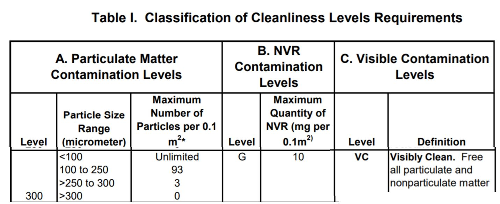

2020-04-19 15:34:18 Standard Practice for Sampling for Particulate Contamination by Tape Lift Ref : http://148.223.46.16/Normas/ASTM/E/E1216.PDFhttps://mmptdpublic.jsc.nasa.gov/prc/7197f.pdfStandard Practice for Sampling for Particulate Contamination by Tape LiftE1216.PDFProcess Specification for Cleaning ofHardwarePRC-5001, Rev F, February 20117197f.pdf